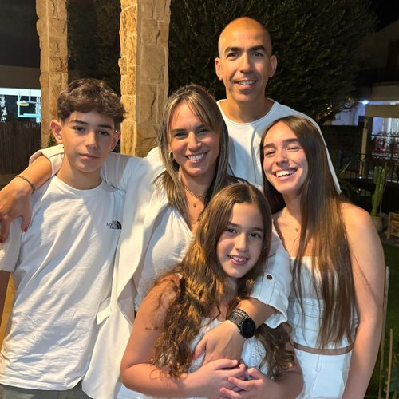
פוקט ← קרבי ← קאולק ← פוקט
המדריך לחופשה מתחיל כאן
תל אביב ← אבו דאבי ← פוקט
Dinso Resort & Villas Phuket, Vignette Collection
ריזורט בוטיק בהשראת "וואבי־סאבי" יפני, על גבעה ירוקה מעל פאטונג — כ־10 דקות נסיעה מהחוף ו־600 מ׳ מקניון ג׳אנגסילון.
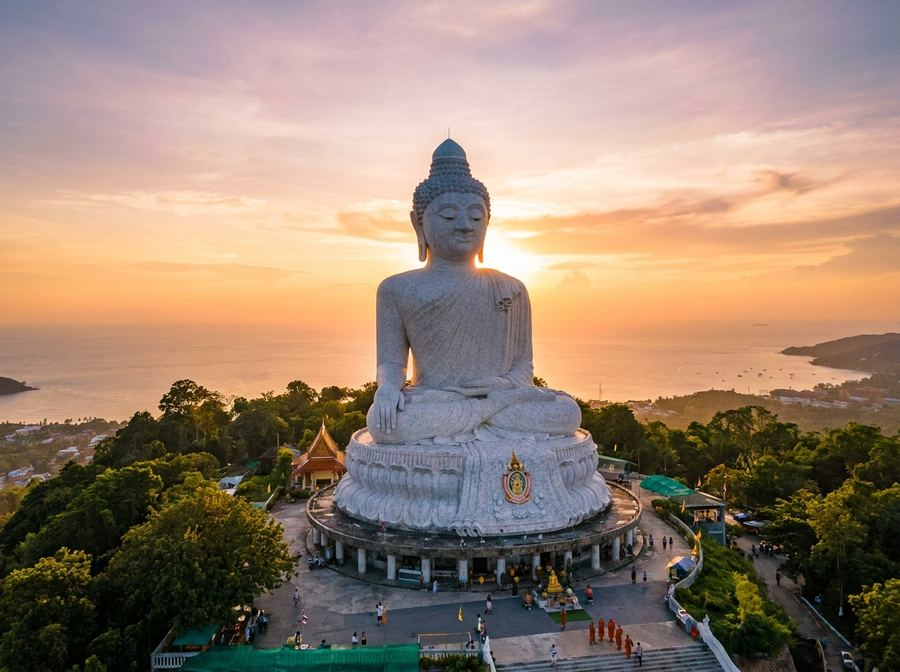
הבודהה הגדול של פוקט
כניסה חינםפסל בודהה מצופה שיש בגובה 45 מ׳ על גבעת נאקרד, עם תצפית 360° על האי. כניסה חינם.
לפרטים נוספים →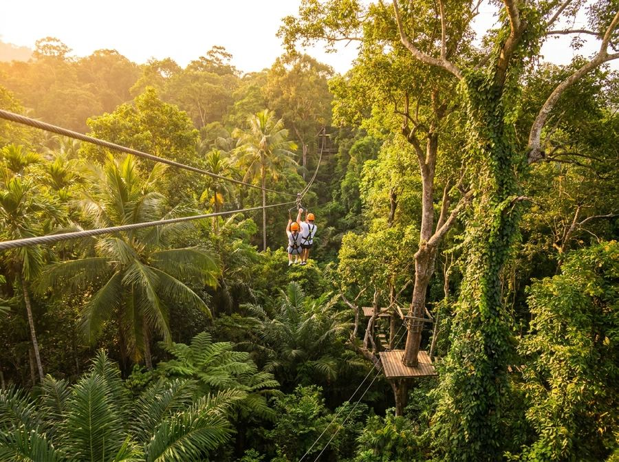
זיפליין ו-ATV ביער הטרופי
$$$ · ~1,800–2,500 ฿ לאדםמסלול זיפליין בחופת הג׳ונגל (21 תחנות, 2 ק״מ) בשילוב רכיבת ATV — אטרקציית אדרנלין מעולה לבני נוער.
לפרטים נוספים →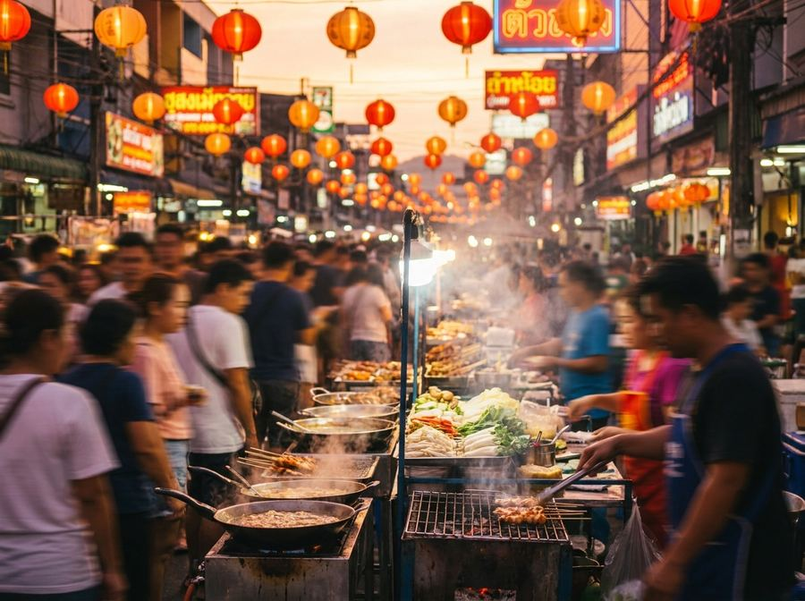
רחוב באנגלה ושוק הלילה
כניסה חינם (אוכל בתשלום)הרחוב התוסס של פאטונג — בערב מוקדם שוק רחוב עם אוכל, ובלילה רחוב הבידור המרכזי של האי.
לפרטים נוספים →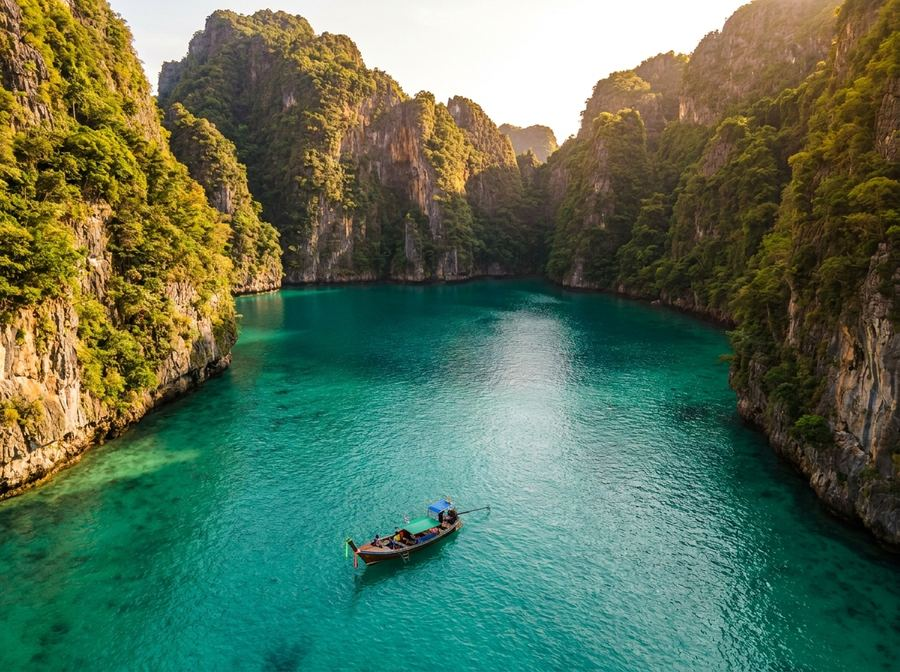
טיול יום לאיי פי-פי
$$$ · ~1,800–2,500 ฿ לאדםטיול סירת מהירות לארכיפלג פי-פי — שנורקלינג במפרץ פילה ובאי במבוק, עצירה במאיה ביי, ארוחת צהריים כלולה.
לפרטים נוספים →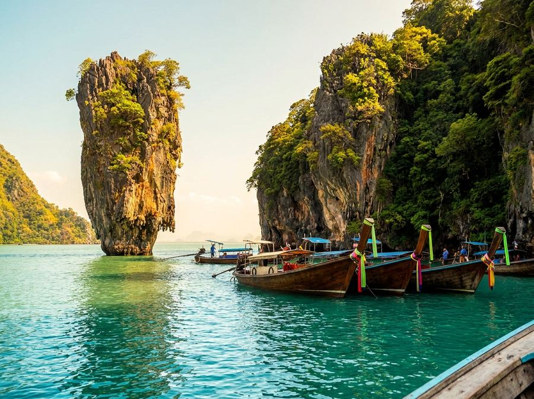
איי ג׳יימס בונד ומפרץ פאנגה
$$$ · ~1,500–2,200 ฿ לאדםשיט בין נופי קארסט מרהיבים, קיאקים במעברים נסתרים, עצירה באי "ג׳יימס בונד" ובכפר הדייגים קוה פאניי.
לפרטים נוספים →המדריך של Time Out לפוקט
עוד המלצות של מגזין הטיולים · timeout.com/phuket
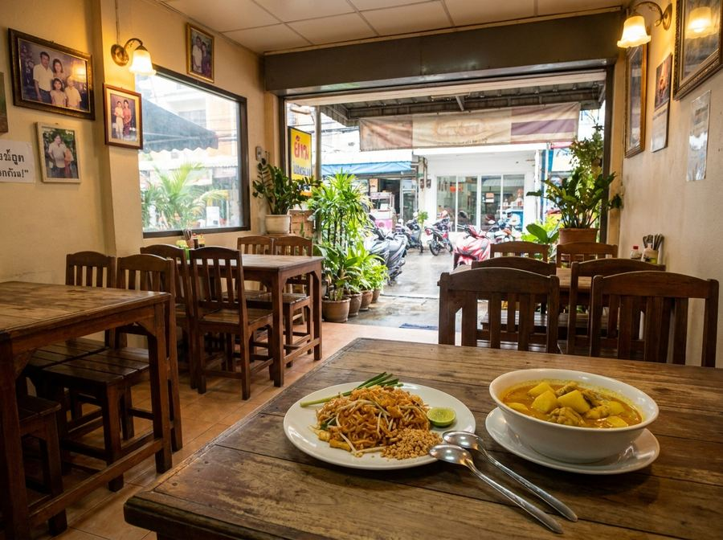
EuroThai Restaurant
תאילנדי אותנטימסעדה משפחתית קטנה וחמימה בסמטת ד״ר ואטאנה בפאטונג — פאד תאי אמיתי וקארי צהוב טעים, לא מתויר.
לפרטים נוספים →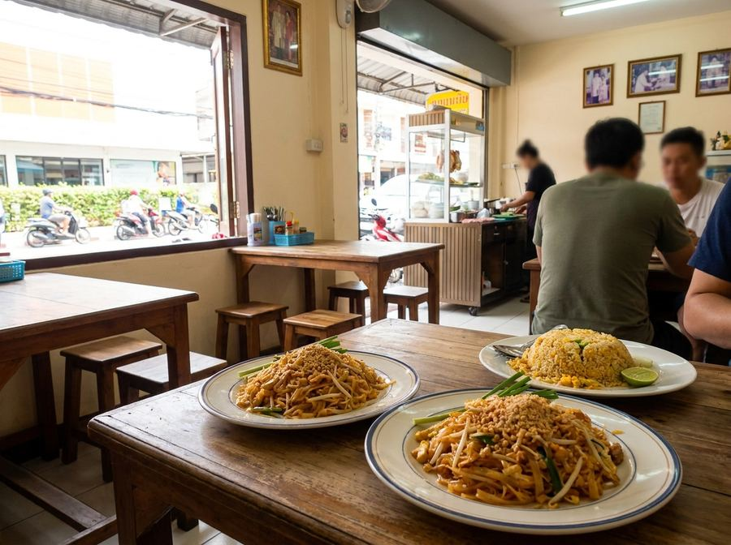
Baan Pad Thaï
תאילנדי, פאד תאימסעדה קטנה בפאטונג המדורגת 5.0/5 בטריפאדוויזור — האורז המטוגן והפאד תאי הכי טובים בעיר, הכל טרי.
לפרטים נוספים →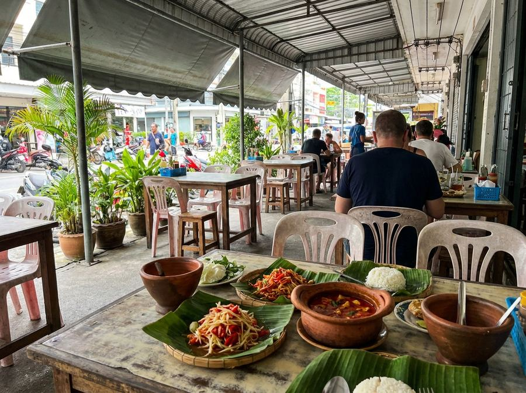
Kaab Gluay
תאילנדי אותנטיאחת המסעדות המקומיות האותנטיות בפאטונג — סלטים חריפים, קארי אדום ומוקפצים במחירים הוגנים.
לפרטים נוספים →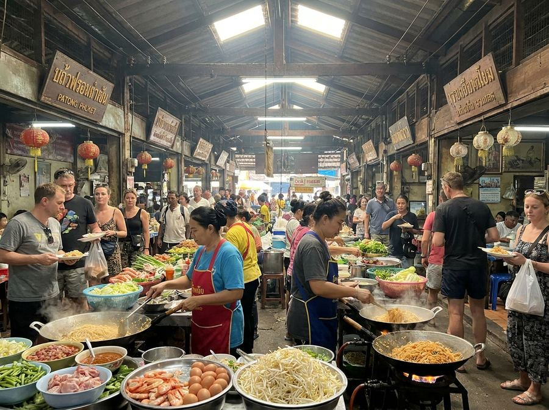
שוק באנזאן — קומת הרחוב
רחוב תאילנדיהקומה השנייה של שוק באנזאן בפאטונג — עשרות דוכני רחוב אותנטיים, פאד תאי בכ-100 ฿, טום יאם עוף ועוד.
לפרטים נוספים →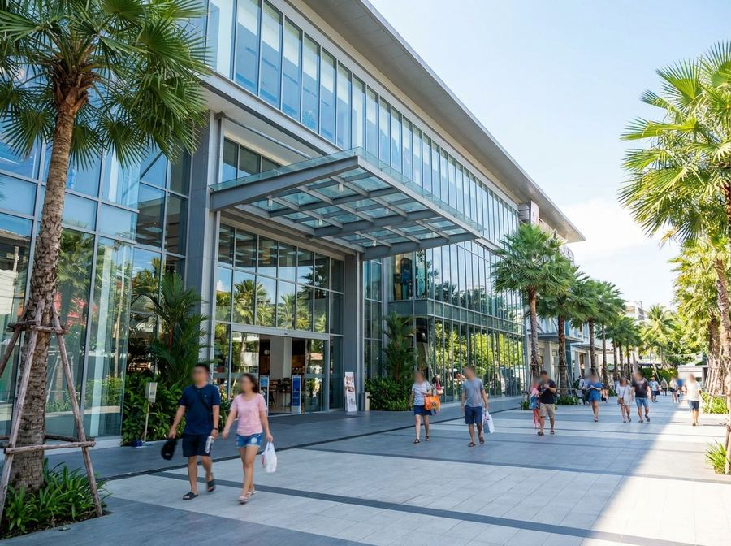
ג׳אנגסילון (Jungceylon)
הקניון הענק והמרכזי של פאטונג — מותגים בינלאומיים ומקומיים, סופרמרקט Big C, קולנוע ופודקורט גדול.
לפרטים נוספים →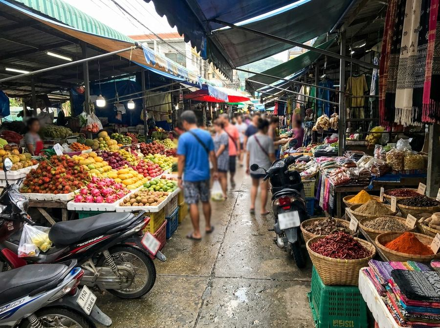
שוק באנזאן
שוק מקומי תוסס עם פירות, תבלינים, בדים ומזכרות — חוויית קניות תאילנדית אמיתית, לצד קומת אוכל הרחוב.
לפרטים נוספים →Dusit Thani Krabi Beach Resort
ריזורט יוקרה על קו החוף בחוף קלונג מואנג (סמוך לחוף טאבקאק), מוקף בצוקי גיר וגנים טרופיים.
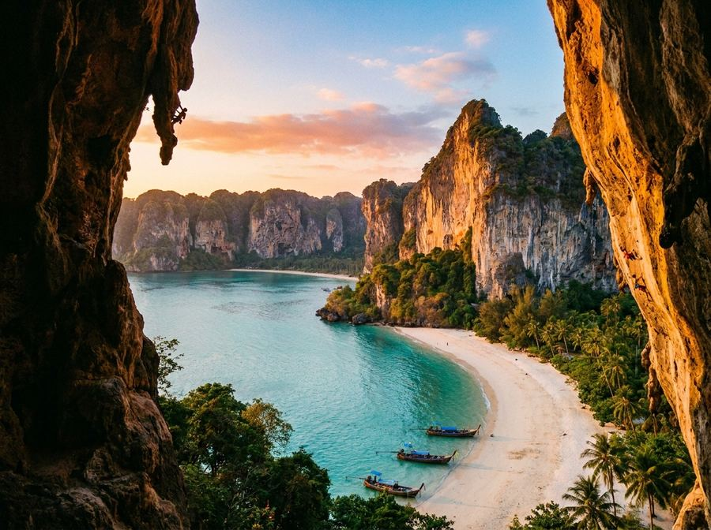
חוף ריילי (Railay)
$$ · ~150–200 ฿ סירה; טיפוס מודרך ~1,500 ฿חצי אי שמגיעים אליו רק בסירה, מוקף בצוקי גיר דרמטיים — מרכז הטיפוס האזורי, זמן חוף וטיולי מערות.
לפרטים נוספים →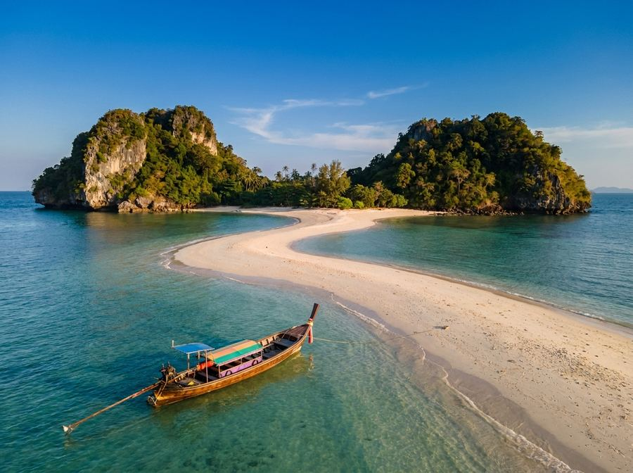
טיול ארבעת האיים
$$ · ~800–1,200 ฿ לאדםטיול סירה של יום שלם — שנורקלינג, שרטון החול המפורסם בין אי העוף לאי טופ, וארוחת פיקניק על החוף.
לפרטים נוספים →מקדש מערת הנמר
כניסה חינם (תרומה)מקדש על גבעה שמגיעים אליו ב-1,237 מדרגות, לפסל בודהה זהוב ולנוף פנורמי — אתגר כיפי לבני נוער. כניסה חינם.
לפרטים נוספים →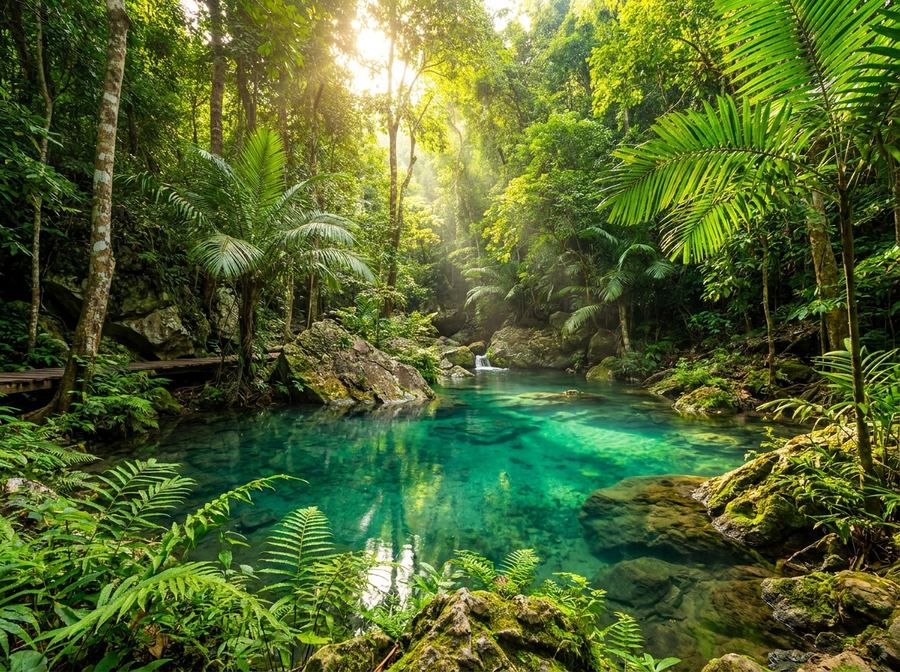
הבריכה האזמרגדית והכחולה
$ · ~200 ฿ כניסה לפארקשמורת ג׳ונגל עם בריכת מעיינות טורקיז לשחייה, ובריכה כחולה מרהיבה במרחק הליכה קצרה (ללא שחייה).
לפרטים נוספים →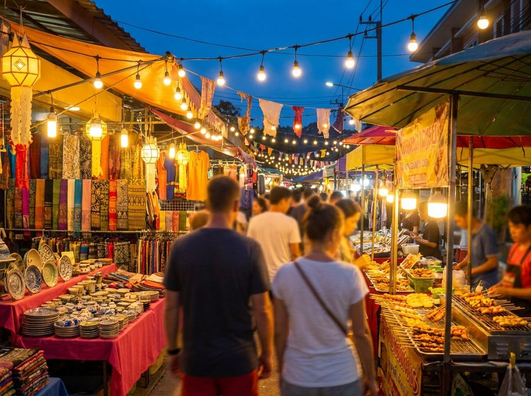
עיירת אאו-נאנג ושוק הלילה
כניסה חינםהמרכז התיירותי של האזור, עם שוק לילה תוסס — אוכל רחוב, מלאכת יד, מוזיקה חיה ומופעי מואי תאי.
לפרטים נוספים →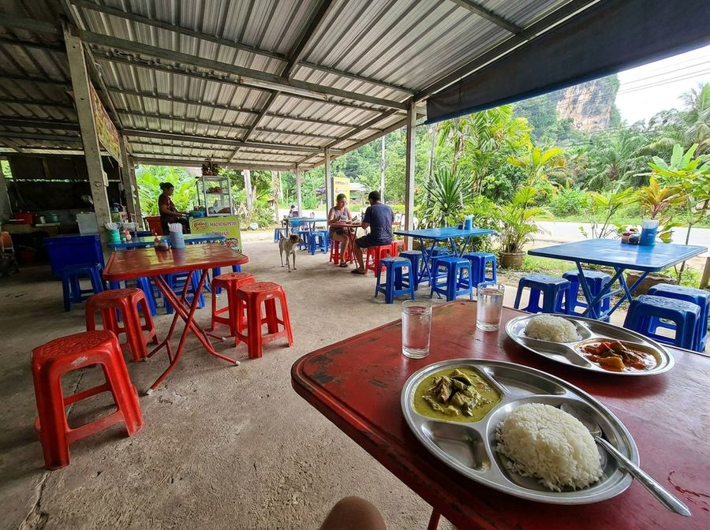
Amp & Aing
תאילנדי משפחתימסעדה משפחתית עם אוכל טוב ומחירים הוגנים — הרבה מקומיים אוכלים כאן, לא רק תיירים.
לפרטים נוספים →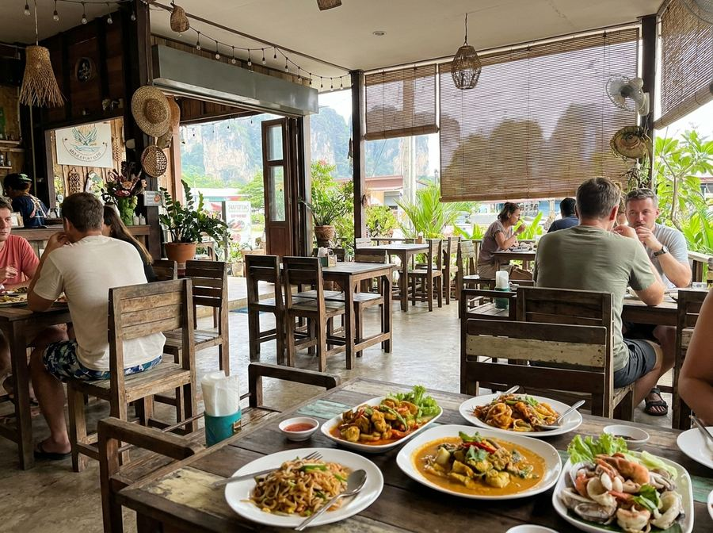
KoDam Kitchen
תאילנדי אותנטיאחת המסעדות התאילנדיות האהובות באאו-נאנג — אוכל טעים במחירים בלתי מנוצחים ואווירה נעימה.
לפרטים נוספים →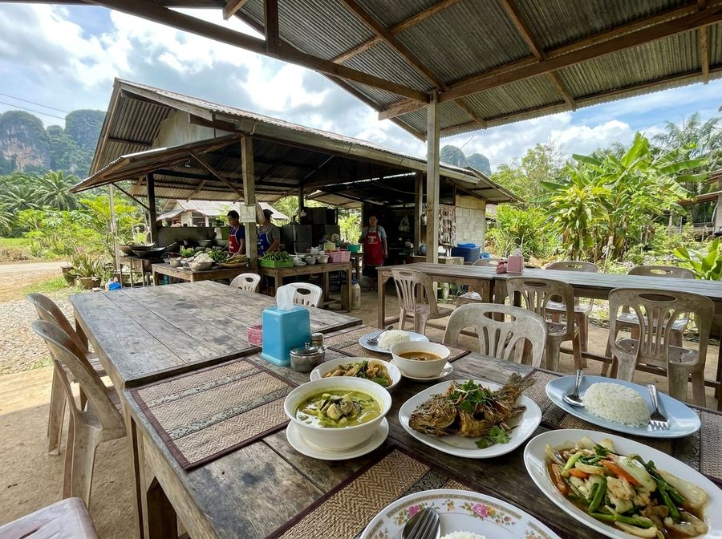
Mama Kitchen
תאילנדי אותנטימקום פשוט למתי שאוהבים מטבח תאילנדי אמיתי, ממוקם מחוץ לאזור התיירותי המרכזי.
לפרטים נוספים →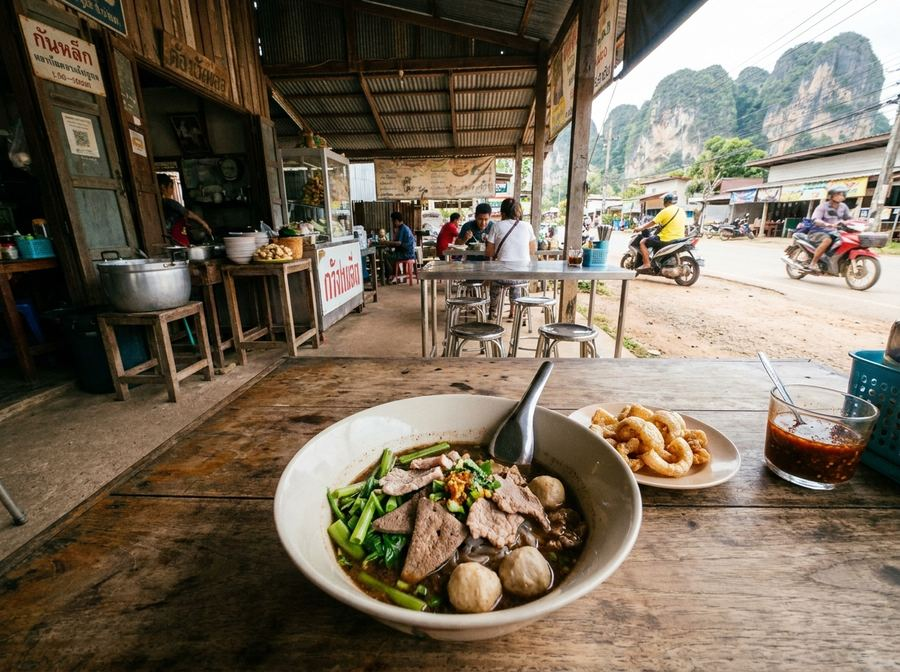
Ao Nang Boat Noodle & Thai Food
נודלס תאילנדיידועה במיוחד בזכות מנות הנודלס הטעימות שלה, במחירים זולים ונוחים.
לפרטים נוספים →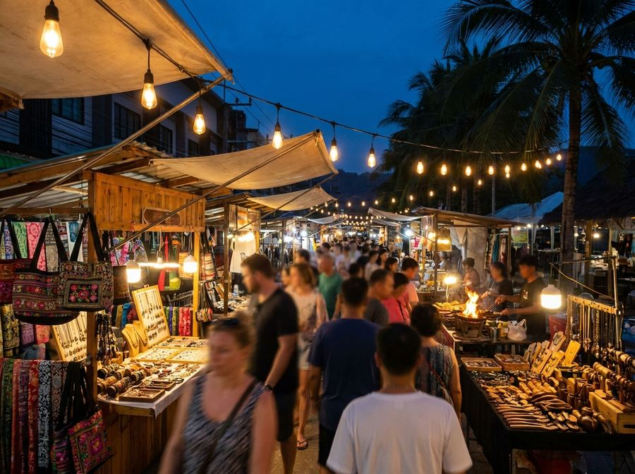
שוק הלילה של אאו-נאנג (Landmark)
שוק לילה תוסס עם חנויות קטנות לבגדים, פריטי דקורציה ומזכרות אישיות, מוזיקה חיה ומופע אש.
לפרטים נוספים →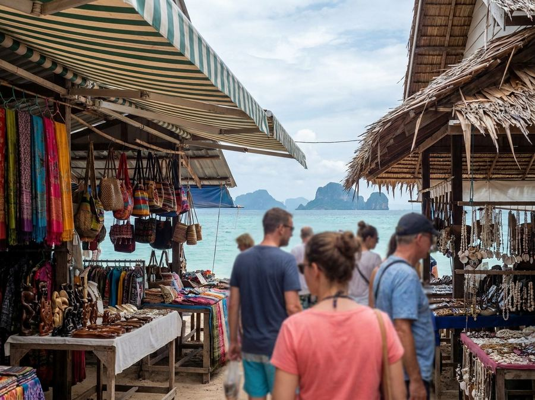
שוק הטיילת של אאו-נאנג
שוק תוסס ליד החוף — מזכרות מקומיות, פירות טריים ואמנות יד, עם נוף לים.
לפרטים נוספים →JW Marriott Khao Lak Resort & Spa
ריזורט יוקרה חופי הפרוש על גנים טרופיים מול ים אנדמן, עם סוויטות משפחתיות ומתקני ספא.
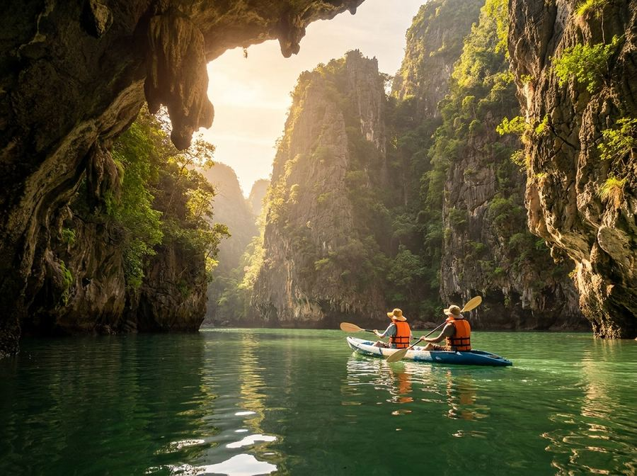
מפרץ פאנגה ואי ג׳יימס בונד
$$$ · ~1,500–2,000 ฿ לאדםאיי סימילן סגורים בתאריכי הטיול (עונת מונסון) — לכן טיול לונגטייל/קאנו במפרץ פאנגה הוא התחליף המומלץ: מערות ים, כפר הדייגים הצף וכמובן אי "ג׳יימס בונד".
לפרטים נוספים →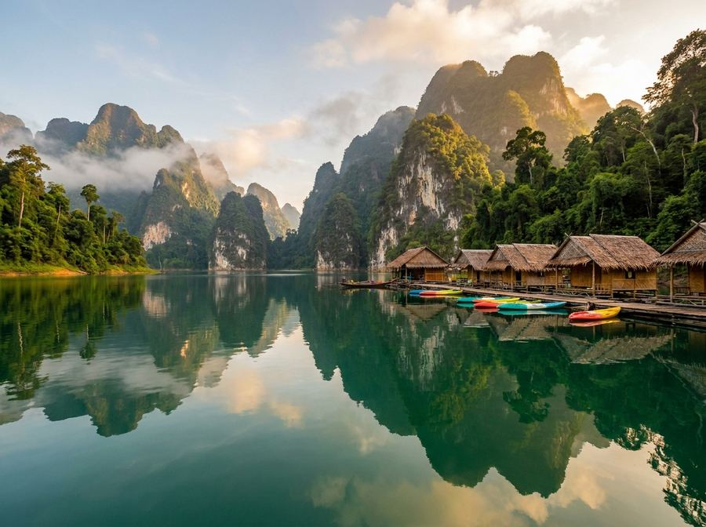
פארק לאומי קאו סוק
$$$ · ~2,000–2,500 ฿ לאדםיער גשם עתיק עם צוקי גיר דרמטיים; סיורי יום כוללים שיט לונגטייל באגם צ׳יאו לאן וארוחה על רפסודה צפה.
לפרטים נוספים →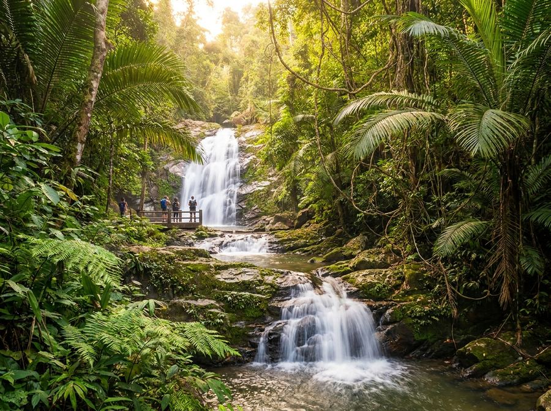
פארק חאו-לאק לאם-רו והמפל
$ · ~200 ฿ כניסה לפארקפארק לאומי חופי-יערי ליד קאולק, עם מפל בן 5 מפלים (Ton Chong Fa) ותצפית נופית על החוף — טיול חצי-יום פעיל.
לפרטים נוספים →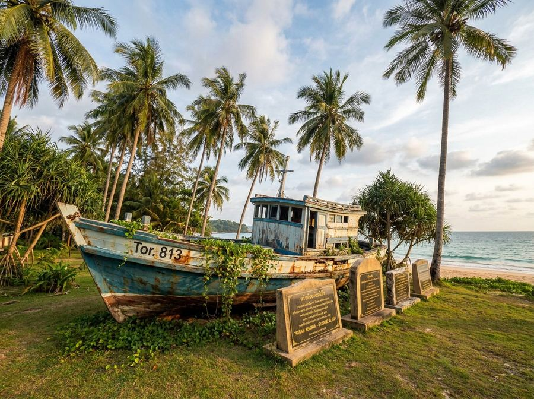
אנדרטת הצונאמי — סירת המשטרה 813
כניסה חינםאנדרטה נוגעת ללב לצונאמי 2004: סירת משטרה שנסחפה כ-2 ק״מ פנימה, כיום מוצבת כאנדרטה — חוויה משמעותית לבני נוער.
לפרטים נוספים →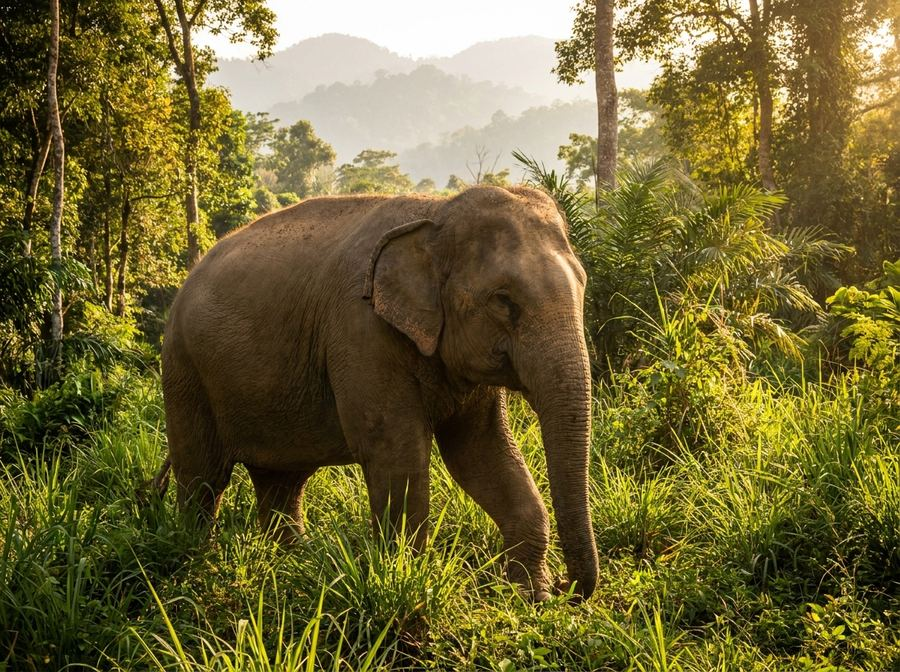
מקלט פילים אתי
$$$ · ~2,000–3,000 ฿ לאדםמקלט אתי אמיתי לפילים מוצלים — ללא רכיבה וללא מופעים, צפייה בפילים משוטטים במערכת "מגע מוגן".
לפרטים נוספים →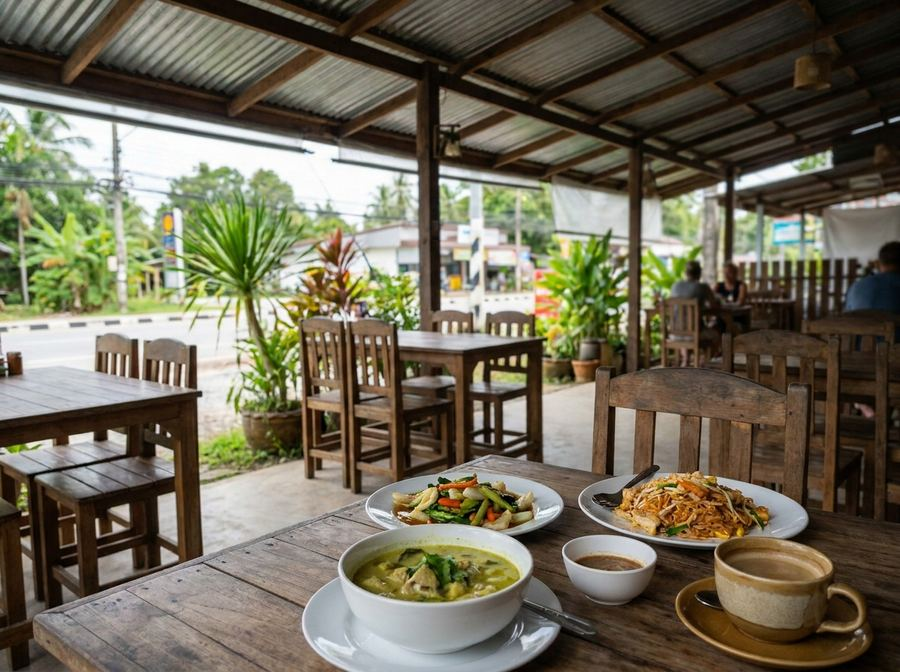
Ten Star Coffee and Food
תאילנדי וקפהברחוב פט קסם, קארי ומוקפצים טעימים לצד קפה טוב — פתוח כל היום עד 23:00.
לפרטים נוספים →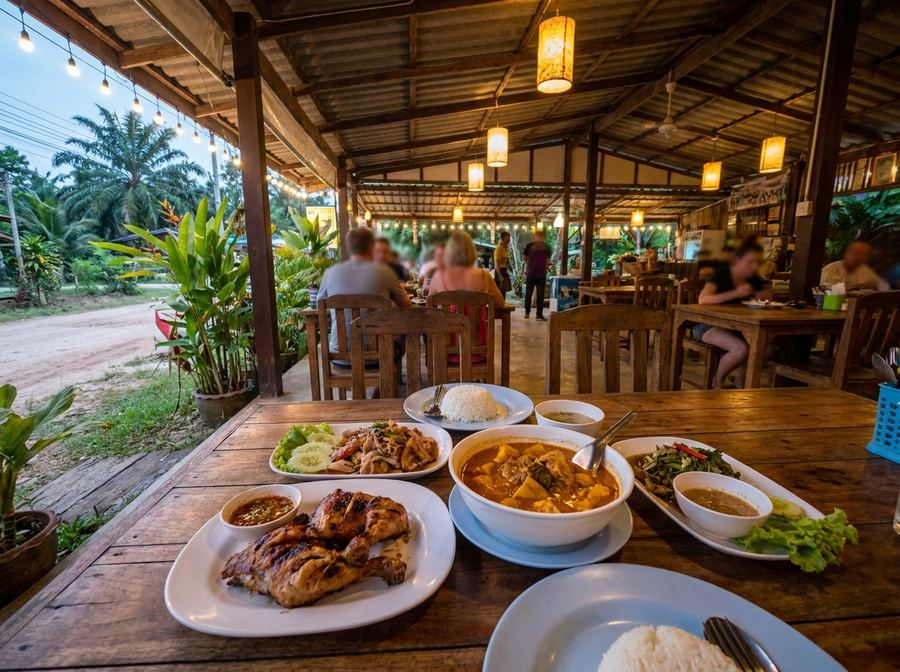
Walkers
תאילנדיידועה בעוף בגריל ובקארי מסמן — סלט המנגו וטום-יאם עוף מקבלים ביקורות מצוינות.
לפרטים נוספים →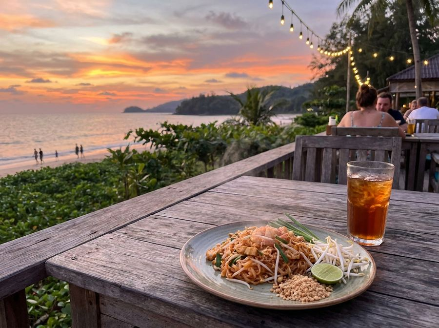
Patty's Restaurant
תאילנדיפאד תאי במחיר ידידותי (כ-80 ฿), נוף יפה על קאולק, אווירה נעימה ורגועה.
לפרטים נוספים →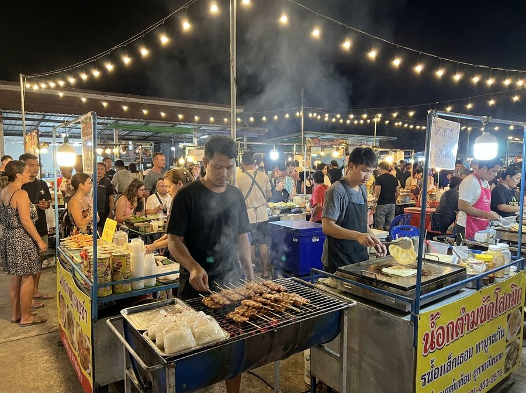
שוק הלילה של באנג-ניאנג
רחוב תאילנדימו-פינג (שיפודי חזיר בגריל) עם אורז דביק, רוטי ומטעמי רחוב תאילנדיים אותנטיים, במחירים מקומיים.
לפרטים נוספים →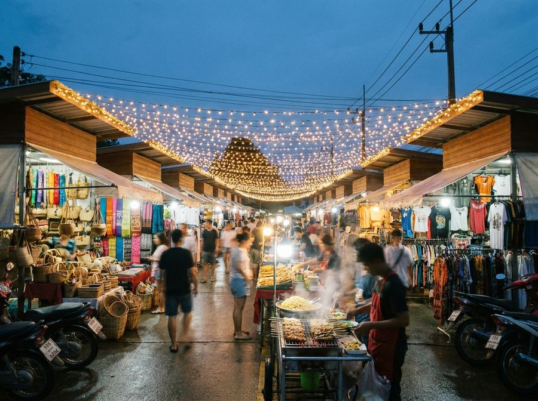
שוק באנג-ניאנג
שוק הלילה המרכזי של קאולק — יותר מ-300 דוכנים של מזכרות, בגדים, מלאכת יד ומוצרי טיפוח תאילנדיים.
לפרטים נוספים →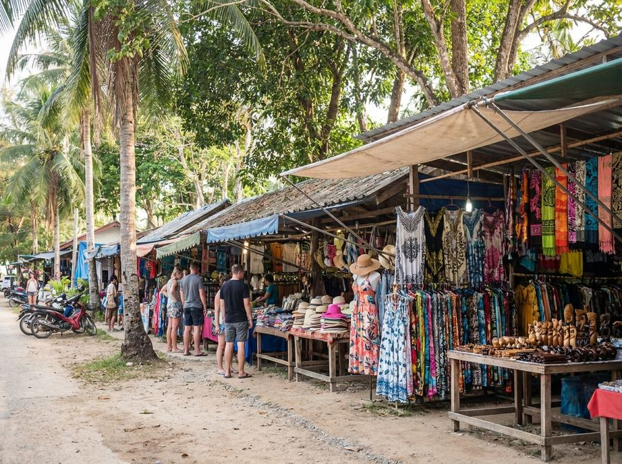
באנג-ניאנג פלאזה
פלאזה פתוחה עם מזכרות, בגדי חוף ומשי תאילנדי — קניות מקומיות רגועות יותר משוק הלילה.
לפרטים נוספים →Phuket Marriott Resort & Spa, Merlin Beach
ריזורט חוף 5 כוכבים על מפרץ מרלין (טרי-טראנג) המבודד, דקות ספורות מדרום לפאטונג — המלון היחיד על מפרץ פרטי משלו.
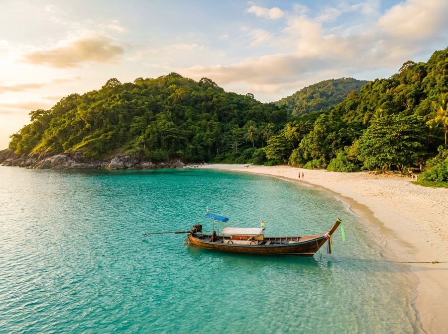
חוף פרידום
$ · ~300–600 ฿ (סירה הלוך-חזור)מפרץ מבודד מדרום לפאטונג, נגיש רק בסירת "לונגטייל" קצרה — אחד השנורקלינג הטובים מהחוף באזור.
לפרטים נוספים →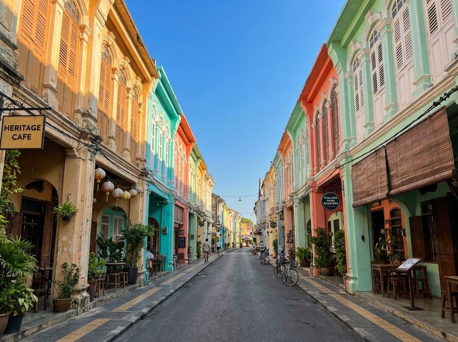
העיר העתיקה של פוקט
חינם (סיור עצמאי)הליכה בין בתי מסחר ססגוניים בסגנון סינו-פורטוגזי ברחוב טאלאנג וסוי רומאני, עם בתי קפה ואמנות רחוב.
לפרטים נוספים →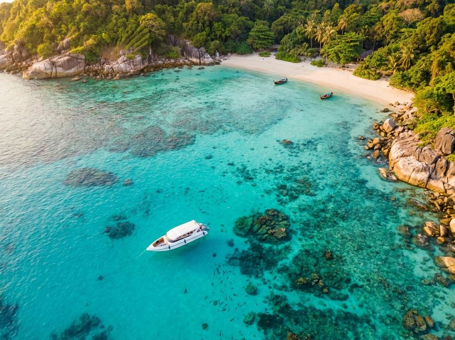
שנורקלינג באי ראצ׳ה
$$$ · ~1,800–2,500 ฿ לאדםטיול יום בסירת מהירות לאי בתולי עם שוניות אלמוגים רדודות, מתאים לכל הרמות, כולל ארוחת צהריים על החוף.
לפרטים נוספים →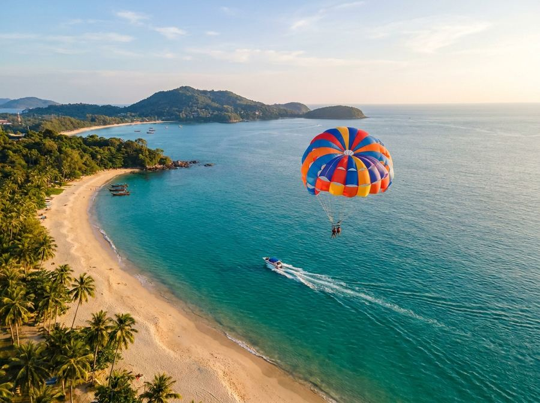
פאראסיילינג וג׳ט-סקי
$$ · ~600–1,500 ฿ לפעילותספורט ימי מהיר ומלא אדרנלין ממש מול חוף פאטונג — פעילות מצוינת של חצי שעה בין ימי חוף.
לפרטים נוספים →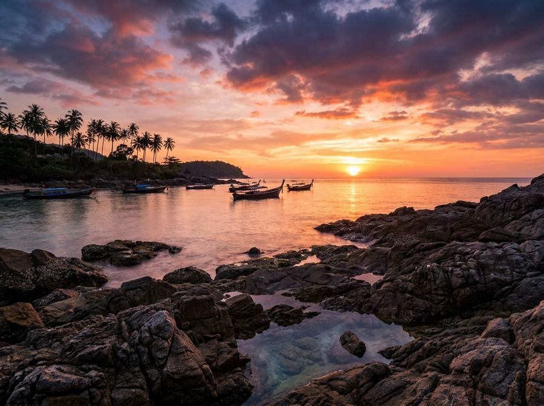
חוף קאלים ונקודת שקיעה
חינםרצועת חוף שקטה וסלעית מצפון לפאטונג, ידועה בשנורקלינג בעונה השקטה ובנופי שקיעה מהיפים בחוף.
לפרטים נוספים →המדריך של Time Out לפוקט
עוד המלצות של מגזין הטיולים · timeout.com/phuket
EuroThai Restaurant
תאילנדי אותנטינסיעה קצרה מקאלים לפאטונג — פאד תאי אמיתי וקארי צהוב טעים במקום משפחתי וחמים.
לפרטים נוספים →Baan Pad Thaï
תאילנדי, פאד תאימדורגת 5.0/5 בטריפאדוויזור — אורז מטוגן ופאד תאי טריים, מומלץ לחזור לכאן גם בשהות השנייה.
לפרטים נוספים →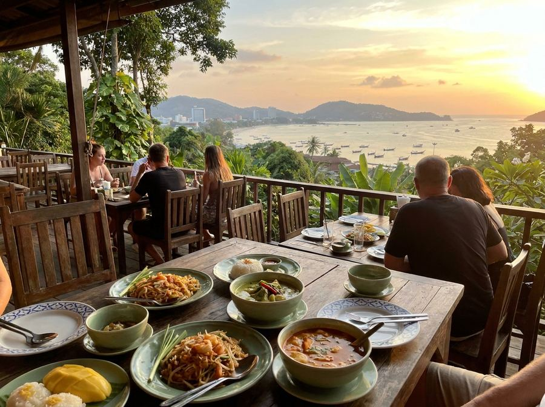
No.6 Restaurant "Up The Hill"
תאילנדיסניף גבעה של מסעדה מקומית ותיקה, עם נוף פנורמי לפאטונג לצד מנות תאילנדיות נדיבות.
לפרטים נוספים →שוק באנזאן — קומת הרחוב
רחוב תאילנדיעשרות דוכני רחוב אותנטיים בפאטונג — פאד תאי בכ-100 ฿, טום יאם עוף ועוד, ממש כמו בשהות הראשונה.
לפרטים נוספים →ג׳אנגסילון (Jungceylon)
נסיעה קצרה מקאלים — הקניון המרכזי של פאטונג, מותגים, סופרמרקט Big C ופודקורט גדול.
לפרטים נוספים →שוק באנזאן
שוק מקומי עם פירות, תבלינים ומזכרות — הזדמנות נוספת לחוויית קניות תאילנדית אמיתית לפני הטיסה הביתה.
לפרטים נוספים →חדר כושר, בריכות, פאדל, כדורגל ועוד — לפי מיקום, עם קישור למקור ולמפה.
הכל על אתיחאד, אבו דאבי, המטוסים וטיפים לפני עלייה למטוס.
אבו דאבי היא הבסיס הראשי (Hub) של אתיחאד איירווייז. אלפי נוסעים עוברים דרכה כל יום, וזה מאפשר לחברה לחבר בין תל אביב לבין יעדים ברחבי אסיה, אוסטרליה, אפריקה ואירופה.
בסך הכל כ-12–14 שעות טיסה נטו, בתוספת זמן ההמתנה לקונקשן באבו דאבי.
כל מה שכדאי לדעת לפני ובמהלך הטיול — תרבות, אוכל, טבע, מזג אוויר וטיפים מעשיים.
אומרים "סוואדי" (Sawasdee) עם קידה קטנה וכפות ידיים צמודות זו לזו בגובה החזה — התנועה הזו נקראת "וואי" (wai).
לבוש צנוע (כתפיים וברכיים מכוסות), ולעיתים צריך להסיר נעליים לפני הכניסה.
באוכל התאילנדי נהוג להזמין כמה מנות לאמצע השולחן ולחלוק אותן — זו דרך תאילנדית של נתינה ושיתוף, ועוזרת גם לאזן בין מנות חריפות לפחות חריפות.
זה אומר שהאוכל בפוקט הוא לא רק ארוחה — הוא חלק מהזהות התרבותית של האי, שמשלב השפעות סיניות-תאילנדיות, מוסלמיות ותאילנדיות-דרומיות.
איי סימילן וסורין נסגרים כל שנה לציבור בעונת המונסון — בדרך כלל מ-15 במאי ועד 15 באוקטובר — כדי לאפשר לטבע להתאושש ומטעמי בטיחות בים סוער. מכיוון שהטיול שלנו הוא בין 17 באוגוסט ל-4 בספטמבר, האיים האלה סגורים בדיוק בתאריכים האלה. זו הזדמנות טובה להסביר לילדים למה שמורות טבע צריכות "לנוח" מדי פעם.
חם ולח, כ-28–32°C. שכיחים ממטרים טרופיים קצרים שמגיעים ונעלמים מהר — לרוב אפשר להמשיך בפעילויות אחרי הגשם.
המטבע המקומי הוא באט תאילנדי (THB). במקומות רבים מקבלים כרטיסי אשראי, אבל תמיד שווה להחזיק גם מזומן.
מתח של 220V. בתי מלון רבים מקבלים גם תקעים אירופאיים, אבל מתאם שקע יכול להיות שימושי.
eSIM או סים מקומי זולים ומהירים — אפשר להזמין מראש או לקנות בשדה התעופה.
Grab היא אפליקציית ההזמנות הפופולרית ביותר. טוקטוק כיפי, אבל אם אין מונה — כדאי לסכם על המחיר מראש.
אזרחי ישראל מקבלים כניסה ללא ויזה למשך עד 30 יום (החל ממאי 2026). כמו כן, מ-2025 חובה למלא מראש טופס דיגיטלי בשם Thailand Digital Arrival Card (TDAC) — חינם, מקוון, עד 3 ימים לפני ההגעה, באתר הרשמי בלבד: tdac.immigration.go.th.
לב לב לדגל האדום על החוף — דגל אדום = אין להיכנס למים.